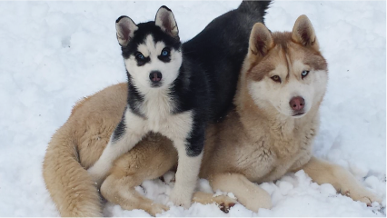
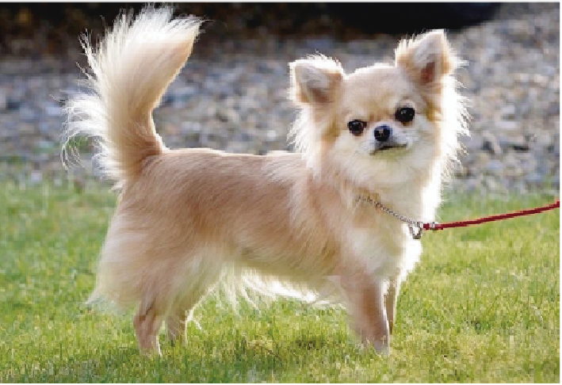

En nuestro mundo pueden exsistri diferentes tipos de perros ya sea de que tipo de raza, domestico o salvajes
tipos de razas

Husky siberiano
Originario de Rusia, el husky siberiano fue utilizado durante mucho tiempo como perro de trabajo, especialmente para transportar a las personas en trineos. Su apariencia similar a la del lobo, de cuerpo fuerte, musculoso y ojos azules o de cada color, acompañado de su abundante pelaje, lo han convertido en una de las razas favoritas de los amantes de los perros. Como mascotas necesitan actividad física regular,
y son propensos a ciertas enfermedades, como las cataratas, la epilepsia y las deformaciones de la columna.

Chihuahua
Directamente desde México, el chihuahua se lleva el título de ser la raza de perro más pequeña del mundo, y en la actualidad parece haberse convertido en el nuevo perrito faldero por excelencia. Suelen ser cariñosos y hasta celosos con sus amos, a quienes gustan de acompañar a todos lados. Debido a su tamaño, el chihuahua es una raza frágil, que requerirá de entrenamiento para fortalecerse. Padecen deformaciones en la cadera de forma genética, y son propensos a sufrir de epilepsia.
Pastor alemán
Imponente, de cuerpo elegante y macizo, el pastor alemán es uno de los favoritos cuando se trata de buscar un perro noble y leal, también es el perro policía por excelencia. En el pasado, era utilizado en Alemania como perro de pastoreo, encargado de reunir al rebaño y cuidar de que no fuera devorado por los zorros o robadas las ovejas.
Poodle
El Poodle o Caniche es una raza de perro que fue utilizada como animal de compañía durante el siglo XV por los nobles y aristócratas, y también se encargaba de recuperar presas cazadas en el agua como cisnes y patos.
Su habilidad de caza permitió que desarrollara ciertas características como adaptabilidad al terreno cenagoso y resistencia al agua. Después de la guerras revolucionarias el Poodle llegó a Francia para posteriormente ser levada a Reino Unido, Países Bajos y España.